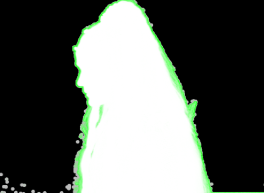
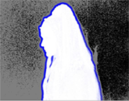

的 视图 参数允许 Keylight 在背景上渲染前景的最终合成，或者前景 RGBA 用于在树的后面进行合成。两个选项, 屏幕 哑光 和 地位 ,用于查看密钥而不是输出。选项是:
• 源 -显示蓝色/绿色屏幕前景。
• 源 阿尔法 -显示前台输入的 alpha 通道。
• 屏幕 哑光 -这是从挑选的磨砂 屏幕 颜色 。它不包括任何内部或外部面具。
• 里面 面具 -显示内部输入。这是用来固定前景磨砂停止打印通过。
• 外面 面具 -显示外部输入。外部面具被用作垃圾面具来显示背景。
• 合并 哑光 -屏幕哑光，内部面具和外部面具添加在一起。
• 地位 -这使得对钥匙的看法变得夸张，这样小问题就能清楚地显示出来。
• 中级 结果 -在只能使用图像不同部分的几个不同键 (多道键控) 的快照上使用此选项。这使得原始图像 屏幕 哑光 在此 Keylight 节点中生成。在树下的 Keylight 节点中，您应该设置 源 阿尔法 在 里面 面具 文件夹到 添加 到 里面 面具 .
• 决赛 结果 -这将创建一个可在以后合成的预乘 RGBA 前景。有一个 Unpremultiply 结果 如果你愿意，你可以使用切换。
• 复合材料 -这将使用所有遮罩、溢出和颜色校正将前景合成在背景上。
地位 是 “视图” 下拉菜单中的选项之一，显示了一个夸张的键视图，以便在微调组合时做出更明智的决定。右边的图显示了从左边的图中显示的图像中选择屏幕颜色后的状态。
|
|
|
| 绿色屏幕。 | 状态。 |
显示三种颜色:
• 黑色像素表示最终合成中的纯背景。
• 白色像素是纯前景。
• 灰色像素是前景像素和背景像素的混合。灰色只是一种颜色来突出任何不是纯前景或背景的区域。灰色像素并不意味着关键是差的-最终的合成可能是好的。
你可能偶尔会看到其他颜色 地位 查看。左边的图显示了黑色、白色、灰色和 绿色像素。
|
 |
|
|
状态显示处理
阿尔法通道的。 |
复合显示
屏幕 替换 颜色 . |
• 绿色像素是一个警告。它们向您展示通过处理 alpha 通道 (剪切、软化或侵蚀) 而改变的 alpha 部分。这些区域已经移除了正确的泄漏量，但是 alpha 随后发生了变化，复合材料可能不再看起来正确。这可以使用 屏幕 替换 颜色 在这些区域重新放置颜色。上面，右边的图是一个极端的例子来说明这一点。的 屏幕 替换 颜色 已设置为纯红色，您可以看到这反映了 地位 查看。
|
 |
|
|
状态显示如何
内部哑光影响 前景。 |
复合显示
|
• 蓝色像素表示处理后的像素 里面 面具 影响前景的绝望。的 里面 替换 颜色 用于修改这些像素。另一个极端的例子显示在右图中。的 里面 替换 颜色 设置为纯黄色和 里面 替换 是 硬 颜色 .
• 你也可以看到暗红色的像素, 地位 。R Ed 像素表示使用外部蒙版来降低图像透明度的区域。
|
|